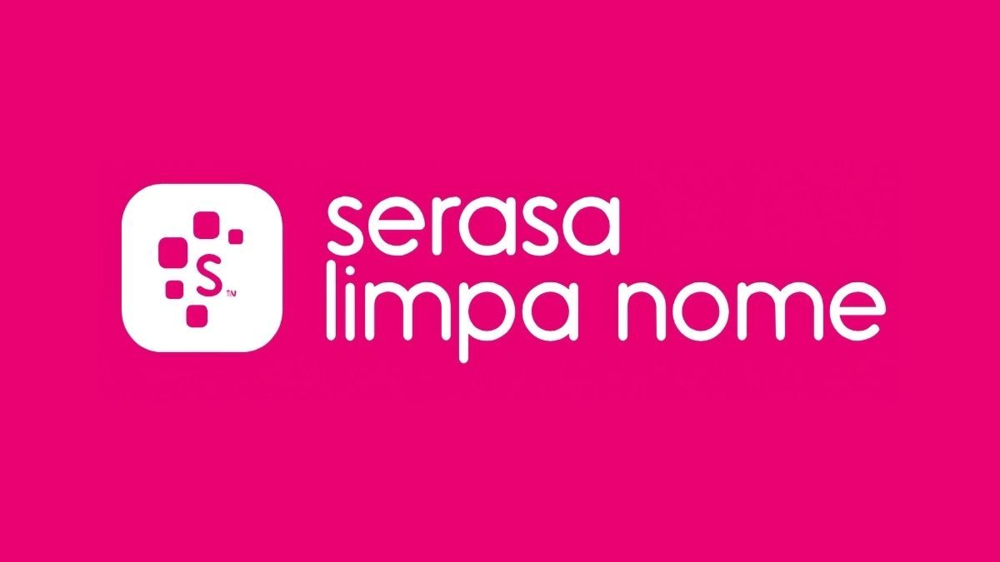

Feirão Limpa Nome vai até 6/12: como negociar dívidas sem cair em golpe
A 36ª edição do Feirão Limpa Nome da Serasa tem mais de 750 milhões de ofertas e descontos de até 99%, até 6 de dezembro. Veja o passo a passo, os canais oficiais e como fugir dos golpes.

Até 23h59 de domingo, 6 de dezembro de 2026, dá para negociar dívidas atrasadas com descontos de até 99% no Feirão Limpa Nome da Serasa. A negociação é gratuita e só deve ser feita pelos canais oficiais: site, aplicativo, WhatsApp da Serasa ou agências dos Correios.
O que é o Feirão Limpa Nome
É um mutirão de negociação de dívidas organizado pela Serasa. Nesta 36ª edição, que começou em 3 de novembro, são mais de 3,3 mil empresas participando e mais de 750 milhões de ofertas. Entram bancos, cartões, lojas, contas de luz, água, telefone e internet.
O Brasil tem hoje 84,2 milhões de pessoas com contas em atraso, um recorde, segundo a Serasa. Se você está nessa lista, não está sozinho.
Onde negociar (só nos canais oficiais)
| Canal | Como usar |
|---|---|
| Site | serasa.com.br, entrando com o seu CPF |
| Aplicativo | App Serasa, no Google Play ou na App Store |
| (11) 99575-2096 | |
| Correios | Mais de 7 mil agências, sem custo até o fim do Feirão. Leve documento oficial com foto. |
As ofertas são as mesmas no site, no app e nos Correios.
Passo a passo para negociar
- Veja quanto você deve. Entre no site ou no app da Serasa com o seu CPF. Aparecem as dívidas e as ofertas de cada empresa.
- Some as parcelas que cabem no seu mês. Antes de aceitar, olhe quanto sobra do seu salário depois das contas fixas. Parcela que não cabe vira dívida de novo.
- Compare à vista e parcelado. O desconto costuma ser maior à vista. Se você vai receber o 13º, pode valer usar uma parte para quitar (veja quando cai o 13º).
- Feche o acordo e pague pelo próprio canal. O boleto ou o PIX são gerados ali mesmo.
- Guarde o comprovante e o número do acordo.
Comece pelas dívidas que mais pesam: as de juros mais altos, como cartão de crédito e cheque especial, e as contas essenciais, como luz e água.
Em quanto tempo o nome fica limpo?
Segundo a Serasa, nas dívidas que permitem, o nome fica limpo na hora, quando o acordo é pago por PIX. Nos outros casos, a empresa tem até 5 dias úteis depois do pagamento para pedir a retirada do seu nome do cadastro de inadimplentes. Se passar desse prazo, reclame com a empresa e, se não resolver, no Procon.
Tenho dívida com banco que não aparece na Serasa
Use o Registrato, do Banco Central. Ele é gratuito e mostra todas as dívidas e empréstimos que você tem em bancos e financeiras, mesmo as que não estão na Serasa. Com essa lista na mão, você negocia direto com o banco.
Como não cair em golpe no Feirão
Os golpistas aproveitam o Feirão para mandar falsos acordos. Fique atento:
- Entre sempre digitando o endereço serasa.com.br ou pelo app oficial. Não clique em link que chegou por SMS ou e-mail.
- Confira o beneficiário do boleto ou do PIX antes de pagar. Tem que ser a empresa credora ou a Serasa, não o nome de uma pessoa.
- Desconfie de quem liga oferecendo desconto e pressiona para pagar na hora.
- Ninguém cobra taxa para negociar ou para "limpar o nome". A negociação no Feirão é gratuita.
E se não der para pagar agora?
Negocie só o que cabe. Se o orçamento não fecha, um dinheiro extra pode ajudar: use a nossa calculadora para ver quanto você precisa juntar por mês para quitar a dívida no prazo que você escolher.
A Serasa não pede senha de banco nem pede PIX para conta de pessoa física. Se alguém fizer isso em nome do Feirão, é golpe: desligue e negocie só pelos canais oficiais.

Sara Marques Amorim
Sara Marques Amorim é publicitária e redatora, formada em Produção Publicitária. Escreve todos os textos do Dinheiro Explicado. Seu trabalho é transformar regra, portaria e letra miúda em resposta clara: quem tem direito, quanto recebe e quando o dinheiro cai.